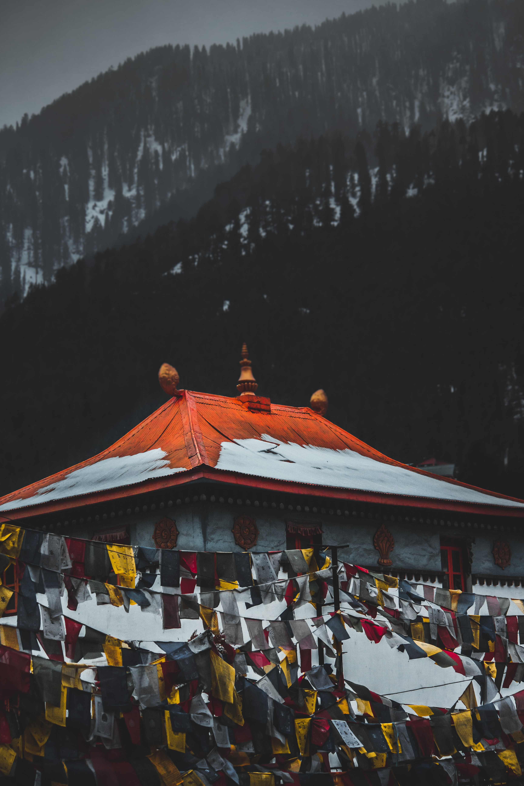

Mawlynnong, also referred as ‘God’s own garden’ has won the acclaim of being the cleanest village in Asia in 2003.It was declared the cleanest village in India in 2005. The village known for its cleanliness is located around 90 kms from Shillong and is a community based eco-tourism initiative. The community has made collective effort to maintain the ambience of a clean village. The adage "Neighbours envy, owners pride' is apt for Mawlynnong as it has earned the distinction of being one of the cleanest villages in Asia, a fact that every Mawlynnong villager is proud of and other villagers are envy of.
The village is quite pretty, especially in the monsoons when there is lush greenery all around, with waterfalls paving the way to small streams and abundance of flowering orchids dangling from the trees and hedges add to the beauty of the village. The main occupation of the villagers is agriculture. They mostly grow betel nut. About 82 households live in Mawlynnong. Keeping the surrounding environment clean is an age old tradition. Discover India magazine declared the village as the cleanest in Asia in 2003.

The onus to keep the village clean lies with every person residing in the village. Local cleaning the roads, picking up leaves and throwing garbage in the bin is a very common sight. Bamboo garbage bins adorn every nook and corner of the village highlight the consciousness of cleanliness among the villagers. Cleanliness is an age old tradition and a way of life for all villagers. The village also offers breathtaking view of Bangladesh plains as it is located on the Indo-Bangla border. Surprisingly, the village has hundred percent literacy and most of the villagers are conversant with the English language. The village offers a number of small tea shops, where you can relish a hot of cup of tea with some snacks. Mawlynnong village has set an example for others that needs to be replicated in other villages. The world salutes to the 'spirit of cleanliness' exhibited by the villagers through their self sustained efforts.